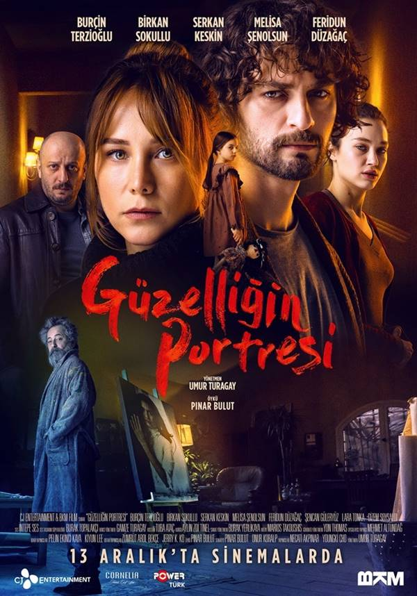

THE DOMESTIC HORROR MOVIES THAT I RECOMMEND TO YOU

Güzelliğin Portresi(2019)
April, a young woman, has not met with her father for many years. However, after receiving an important news about his father, he takes a break at the father's house with his wife and daughter. April, who has returned to the mansion she left by running away years ago, witnesses strange situations here. April is forced to face her past, which she thinks she has escaped and survived, when she arrives at the mansion, during which she is subjected to questioning by the police, who are trying to solve the mystery about her father. Feeling trapped in a corner, April has to solve the mystery of the mansion in order to protect herself and her family.
In the movie Siccin, which has the meaning of a notebook in which the sins of the infidels are recorded as a word meaning, it is about the fact that Öznur's aunt, whom he has loved since childhood, had a spell on Nisa, the wife of Kudret, and the genie captured Nisa, in order to be with his son Kudret.
Dabbe is a Turkish horror film produced, directed and written by Hasan Karacadağ. The film is about Dabbe'tul Arz, which is set in Surah Neml in the Qur'an, where religious scholars cannot meet on common ground about what it is, and interprets it as an internet network.